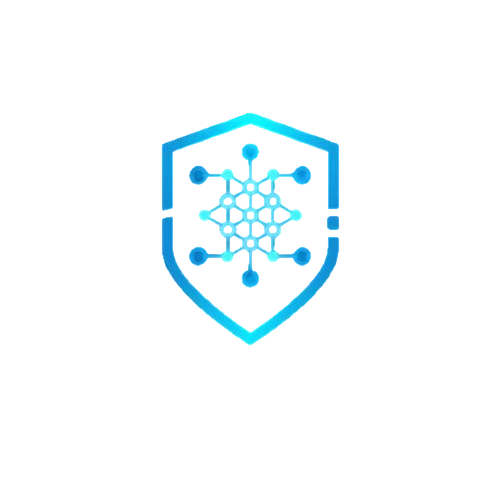
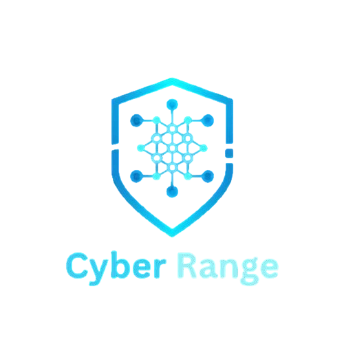

منصة Cyber Range توفر بيئة تدريبية عملية تساعد المتدربين على تشغيل السيناريوهات والتفاعل معها بما يدعم التطبيق العملي لمفاهيم الأمن السيبراني في بيئة آمنة ومعزولة.
منصة Cyber Range هي نظام تدريبي يهدف إلى توفير بيئة عملية لتعلم الأمن السيبراني من خلال سيناريوهات تفاعلية قابلة للتشغيل.
تتيح المنصة للمتدربين تشغيل بيئات افتراضية معزولة باستخدام Docker و Virtual Machines، مما يساعد على التطبيق العملي للمهارات دون التأثير على الأنظمة الحقيقية.
توفير بيئة تدريب عملية تدعم تنمية المهارات التطبيقية في الأمن السيبراني.
تقديم منصة تدريبية تساعد المتدربين على تشغيل السيناريوهات والتفاعل معها بشكل مباشر وآمن.
سيناريوهات تدريبية عملية تساعد على فهم بيئات الاختبار والتعامل مع المهام التقنية داخل بيئة معزولة وآمنة.
تدريبات تركز على التعامل مع البيئات التشغيلية ومتابعة الجلسات والوصول إلى السيناريوهات المخصصة للتدريب.
بيئات تدريبية تدعم الوصول عبر RDP أو TTYD حسب نوع السيناريو، بما يتيح ممارسة الجوانب العملية داخل المنصة.
توفر المنصة بيئات تدريبية يتم تشغيلها عند الطلب، بحيث يمكن للمتدرب التفاعل مع السيناريو مباشرة دون الحاجة إلى إعدادات معقدة.
تتيح المنصة تشغيل بعض السيناريوهات باستخدام الآلات الافتراضية، مع توفير ملف RDP للوصول إلى البيئة التدريبية بعد بدء الجلسة.
تدعم المنصة تشغيل سيناريوهات تعتمد على الحاويات، مع إتاحة الوصول إليها من خلال واجهة TTYD عبر المتصفح.